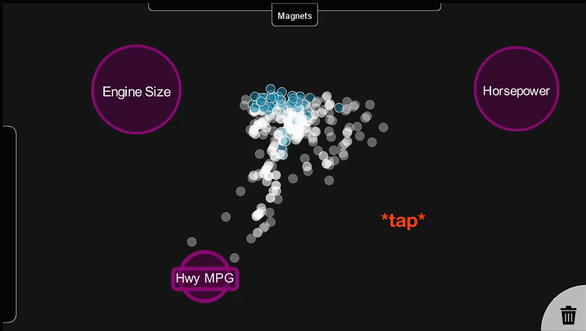

Hands-On, Large Display Visual Data Exploration
aka Dust and Magnet on a Big Fancy Touchscreen
Andrew Dai, Ramik Sadana, Chad Stolper, John Stasko
Dust and Magnet (old)
- multivariate data visualization
- keyboard and mouse/desktop
Moving to a large multitouch display
- take advantage of touch
- more intuitive user interface
- more interactive and responsive
- allow collaboration
(new) Dust and Magnet
- simplified interface
- multitouch!
- continously animated
- occlusion-free mode
Simplified, More Intutive Interface
multiple windows → one screen, collapsible menus, rounded corners, and big bright buttons
Resizing Magnets
pinch to resize
Multiple Moving Magnets
multitouch/multiuser
Removing Magnets (Before)
drag into the bottom right corner
Removing Magnets (After)
gone!
Occlusion-Free (before)

Todo:
- detail view
- inverse magnets
eta: eventually